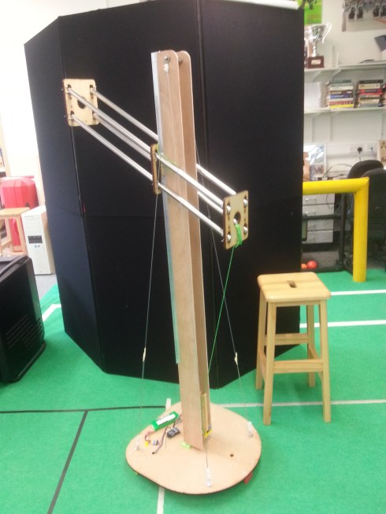

Welcome to CHAP
CHAP, or CHeap Arm Project, centers around the creation of a low cost and open source mobile tele-operated robot arm designed. With a final production target of under or around £1000, this arm intends to be the most accessible robot arm yet!
CHAP hopes to give greater levels of independence to those living with disabilities by creating a financially accessible platform that can help out around the home. By being open source, we hope to encourage further development such as robot intelligence and automation in the future.
